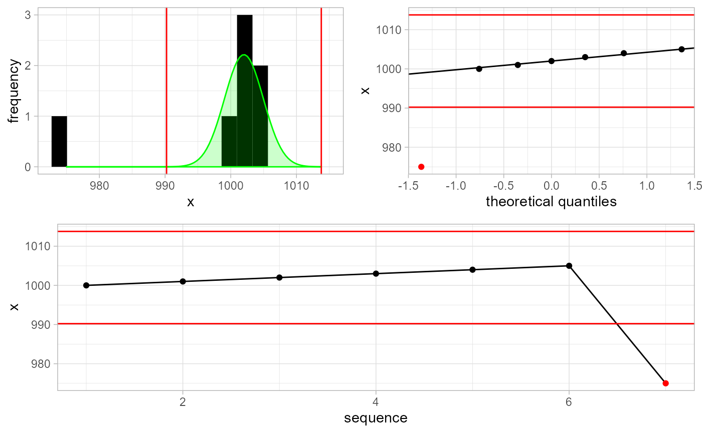
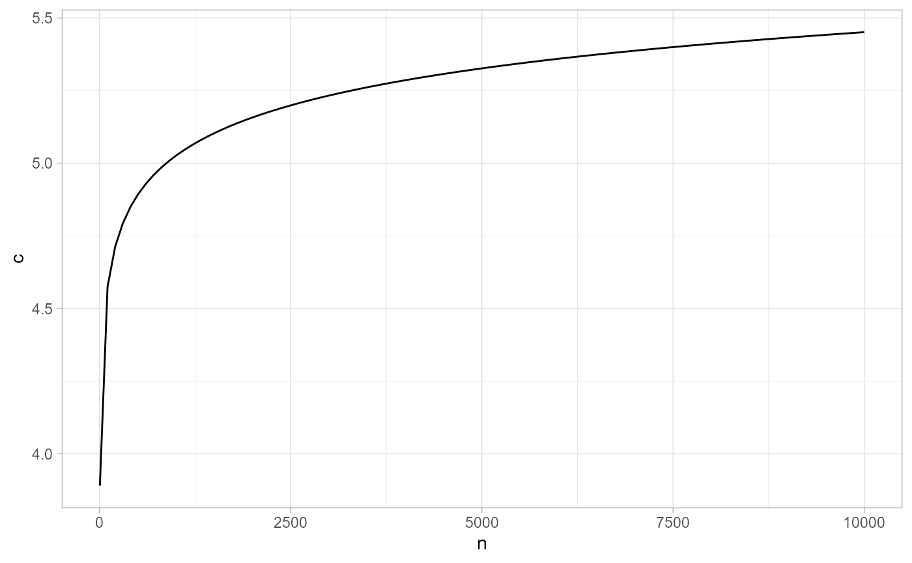
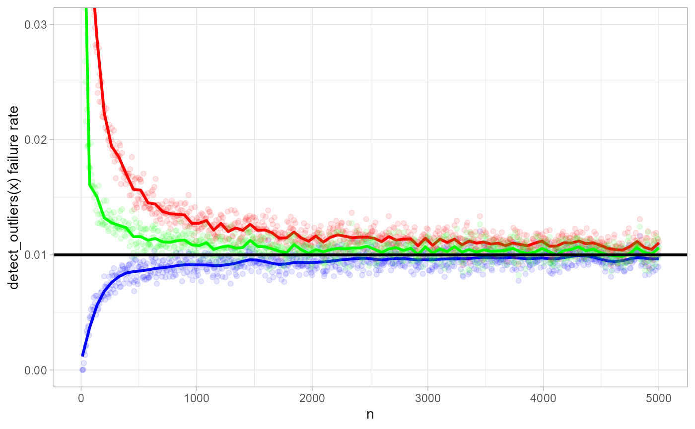

This is an advanced guide. It explains how detect_outliers() works for air pressure data. Make sure you have first read the getting started material.
Outliers are single measurements that are considered very unlikely to occur. The detect_outliers() function takes in a vector of observations and returns a boolean vector of outlier indicators:
x <- c(1000:1005, 975)
x
#> [1] 1000 1001 1002 1003 1004 1005 975
gwloggeR::detect_outliers(x)
#> [1] FALSE FALSE FALSE FALSE FALSE FALSE TRUESo why is \(975\) considered an outlier? We can understand the decision procedure better if we add some comprehensive plots and extra output:
gwloggeR::detect_outliers(x, plot = TRUE, verbose = TRUE)
#> [1] FALSE FALSE FALSE FALSE FALSE FALSE TRUE
#> attr(,"class")
#> [1] "logical" "Outliers"
#> attr(,"x.mean")
#> [1] 1002
#> attr(,"x.sd")
#> [1] 2.9652
#> attr(,"sigma.reject")
#> [1] 3.971425
#> attr(,"alpha")
#> [1] 5e-04
#> attr(,"type")
#> [1] "two.sided"
#> attr(,"fun.density")
#> function (x)
#> dnorm(x, x.mean, x.sd)
#> <bytecode: 0x0000000019e49b78>
#> <environment: 0x000000001a032240>
#> attr(,"cutpoints")
#> [1] 990.2239 1013.7761
#> attr(,"version")
#> [1] "0.01"The underlying assumption for outlier detection is normality of \(x_i\). Top left plot shows the histogram of the data points. The green curve is the best-fit normal distribution, based on robust estimates of \(\mu\) and \(\sigma\). The cutoff points are signified by red vertical lines. The top right is the QQ-plot with cutoff points as horizontal lines. The bottom plot is the sequential data, with outliers in red.
How do we determine where to place the red cutoff lines? Well, for start, we want to minimize false positives. Suppose that we take \(100\) random points from a standard normal distribution. If we place the cutoff lines at \(c = \pm 1.96\) then we expect to find \(5\) outliers on average. But these are not real outliers! Remember our assumption that all the points in this set are from the standard normal distribution. So we want to set the cutoff lines at the optimal place: not too small, so we don’t flag points as outliers incorrectly, but also not too big either, because in that case we might miss real outliers.
Let us formalize the above intuition. Assume that \(\mathbf{x}\) consists of \(n\) independent and identically distributed observations \((x_1, x_2, \dots, x_n)\) taken from a standard normal distribution with fixed \(\mu = 0\) and \(\sigma = 1\). Now we choose some \(c\) as the cutoff line. We can then calculate the probability of at least one outlier detected in the detect_outliers(x) process:
\[ P(|x_1| > c \lor |x_2| > c \lor \; \dots \; \lor |x_n| > c) = \alpha \]
That probability is \(\alpha\). We want to set \(c\) such that \(\alpha\) is low. How low? Well, if we set it to \(1/2000\) then it means that we will detect one or more outliers in \(1\) out of \(2000\) times we run detect_outliers(x). Obviously, on average, this \(1\) time we will be wrong, but in \(1999\) of the other cases we will not. This seems a good value for a production setting.
Ok, so now that we know our optimal \(\alpha\), how do we compute \(c\)? We first massage a bit the above equation:
\[ P(|x_1| > c \lor |x_2| > c \lor \; \dots \; \lor |x_n| > c) = \alpha \\ 1 - P(|x_1| \le c \land |x_2| \le c \land \; \dots \; \land |x_n| \le c) = \alpha \\ 1 - \prod_i \Phi(|x_i| \le c) = \alpha \\ 1 - \left[ 1 - 2\Phi(x < -c) \right]^n = \alpha \]
Now solving for \(c\) is easy:
\[ c = -\Phi^{-1} \left( \frac{1-(1-\alpha)^\frac{1}{n}}{2} \right) \]
where \(\Phi^{-1}(\cdot)\) is the standard normal quantile function.
This is how \(c\) behaves in function of \(n\) with fixed \(\alpha = 1/2000\).
ggplot2::ggplot(data = data.frame(n = 5:10000), mapping = ggplot2::aes(x = n)) +
ggplot2::stat_function(fun = function(n) -qnorm((1-(1-1/2000)^(1/n))/2), col = 'black') +
ggplot2::theme_light() + ggplot2::ylab('c')
Note that this function is implemented in gwloggeR:::c.norm.optimal(alpha, n). So as long as we set \(c\) to the optimal value we make sure that we will make a wrong detect_outliers(x) run (i.e. detect falsely one or more ouliers) in \(1/2000\) of time.
# e.g. optimal c for 5000 points:
gwloggeR:::c.norm.optimal(alpha = 1/2000, n = 5000, type = "two.sided")
#> [1] 5.326678Here we simulate data from a normal distribution with random \(\mu\) and \(\sigma\). We set \(\alpha = 1/100\) and by varying \(n\), estimate the proportion of wrong detect_outliers(x) runs (i.e. runs in which we falsely identify one or more outliers).
Black horizontal line represents the expected \(0.01\) failure rate. The blue curve is the failure rate estimate based on mean and standard deviation, which are most efficient estimators in case there are no outliers. The red curve is the failure rate based on median and MAD. In case \(n < 500\), the MAD approach is very optimistic: it is \(2\) to \(3\) times more likely to detect falsely one or more outliers. The green curve is based on the the \(Q_n\) scale estimator (TODO).

In calculating \(c\) we assumed \(x_i\) being normal with \(\mu = 0\) and \(\sigma = 1\). To make the above also work for \(y_i\) from any normal distribution, we need to estimate \(\mu\) and \(\sigma\). Once we have the estimates, then we can standardize \(y_i\) using \((y_i - \mu)/\sigma = x_i\) and use the previous results on \(x_i\).
Mean and square root of variance give the most efficient estimators for \(\mu\) and \(\sigma\) as long as \(\forall i : y_i \sim \mathcal{N}(\mu, \sigma^2)\) and mutually independent. Under influence of real outliers, these estimators get easily biased. (cf. Leys et al. 2013) So we need more robust estimators for \(\mu\) and \(\sigma\).
In case of outliers, a way to measure robustness is the breakdown point. The maximum attainable breakdown point is \(50 \%\), meaning that \(50 \%\) of observations can be replaced by arbitrary large numbers, without breaking the estimator. For \(\mu\), the obvious choice is the median. For \(\sigma\) it is the median absolute deviation (MAD). They both have a \(50 \%\) breakdown point. A problem with the latter is its efficiency (cf. simulation). There exist more efficient \(\sigma\)-estimators than the MAD. For example the \(Qn\)-estimator (cf. Rousseeuw and Croux 1993). Currently, MAD suffices because we usually have lots of data (\(n > 5000\)) so efficiency suffers less.
We can improve the outlier detection by providing a-priori information about \(\mathbf{x}\). For example:
x <- c(990:999)
gwloggeR::detect_outliers(x, apriori = gwloggeR::apriori("air pressure", "cmH2O"), plot = TRUE)#> [1] TRUE TRUE TRUE TRUE TRUE FALSE FALSE FALSE FALSE FALSETop left is again the histogram of \(\mathbf{x}\). But the green density this time is not a robust normal estimate based on \(\mathbf{x}\). Instead it is the hard-coded a-priori density distribution of air pressure (\(cmH_2O\)) in Belgium. Given the \(10\) points and assuming that we want to detect falsely one or more outliers in \(1\) of \(2000\) tests, we set the red cutoffs appropriately. This results in first \(4\) points being identified as outliers.
detect_outliers(x) based on \(Q_n\) estimator for variance.Leys, Christophe, Christophe Ley, Olivier Klein, Philippe Bernard, and Laurent Licata. 2013. “Detecting Outliers: Do Not Use Standard Deviation Around the Mean, Use Absolute Deviation Around the Median.” Journal of Experimental Social Psychology 49 (4): 764–66. doi:10.1016/j.jesp.2013.03.013.
Rousseeuw, Peter J., and Christophe Croux. 1993. “Alternatives to the Median Absolute Deviation.” Journal of the American Statistical Association 88 (424). Taylor & Francis: 1273–83. doi:10.1080/01621459.1993.10476408.